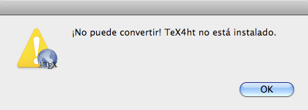
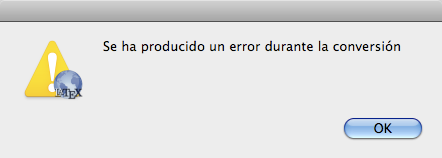

Si TeX4ht no esta instalado SimpleTeX4htmostrará el mensaje de error:

SimpleTeX4ht no incluye TeX4ht. La instalación de TeX4ht resuelve el problema.

Se ha producido un error durante la compilaci—n. TeX4ht no puede convertir su archivo de LaTeX.